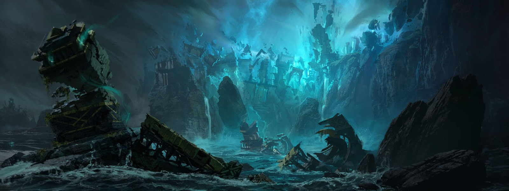
Cayó porque un hombre no quiso enterrar a su esposa.
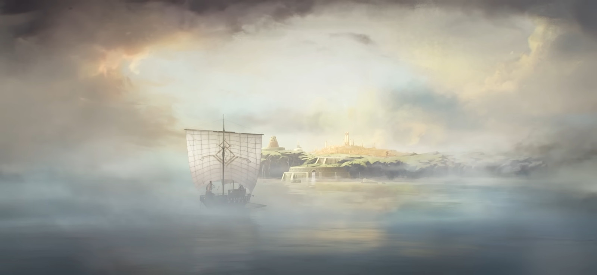
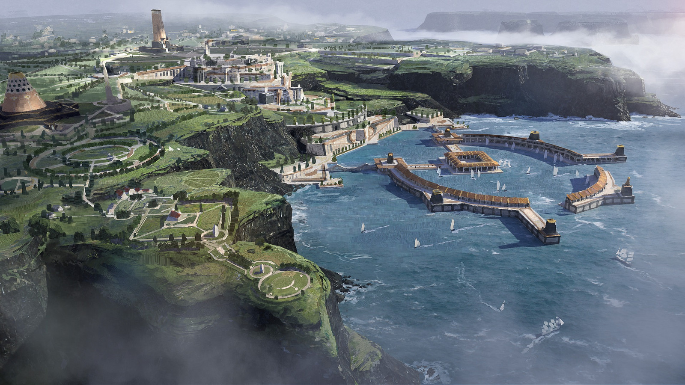
Una orden de eruditos. Su ciudad se llamaba Helia.
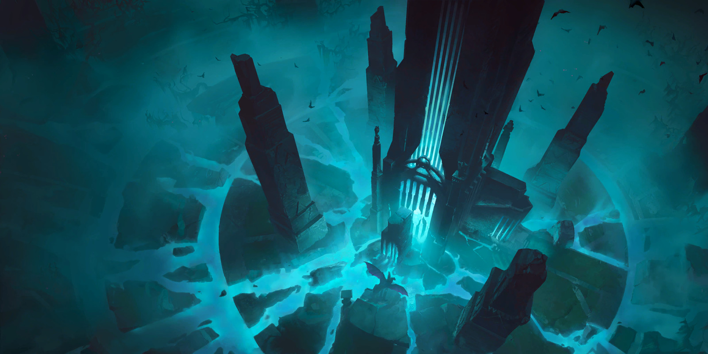
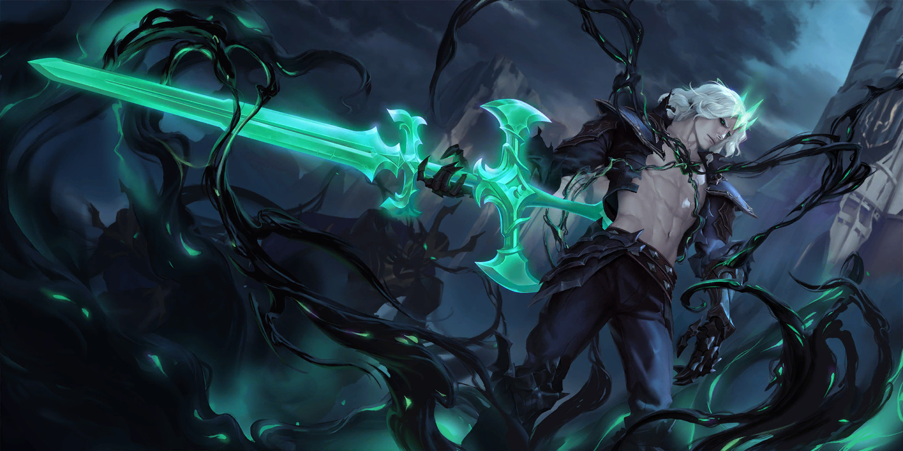
Era el segundo hijo. La corona le tocó porque su hermano se murió antes de tiempo.
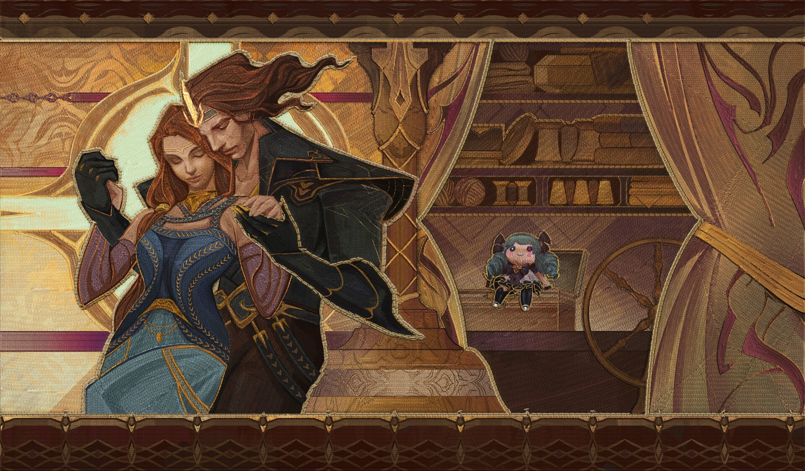
Se llamaba Isolde.
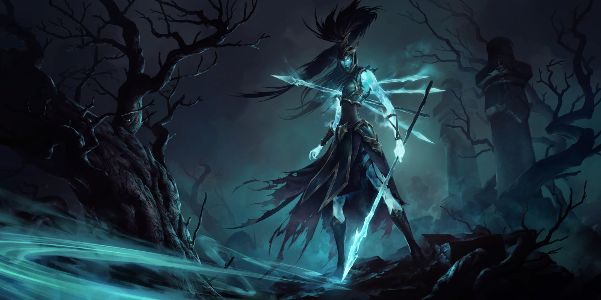
Cuando volvió, la reina ya estaba muerta.
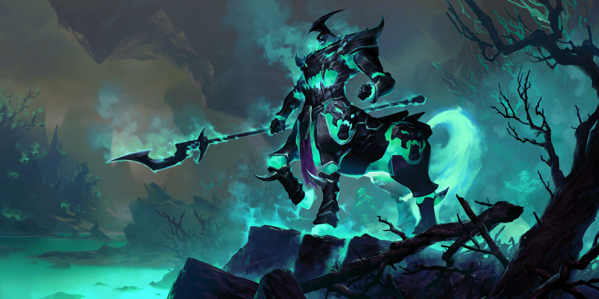
Comandante de la Orden de Hierro. La convenció de guiar la flota a las islas.
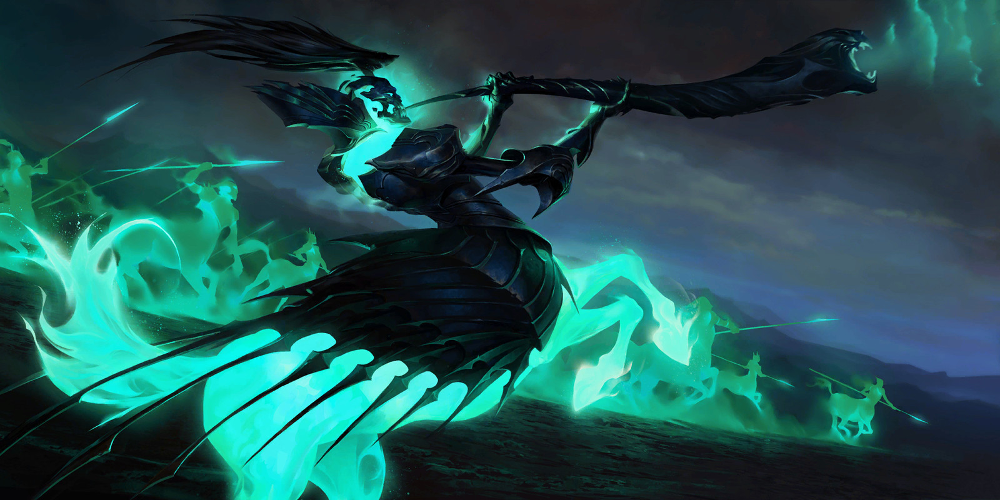
Y la Orden de Hierro se puso a saquear las bóvedas.
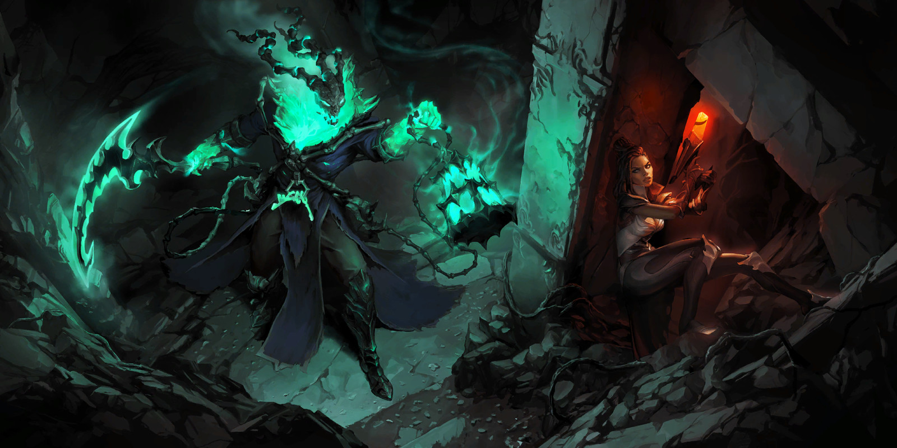
Guio al rey hasta las Aguas por su propia voluntad. Y se rio.
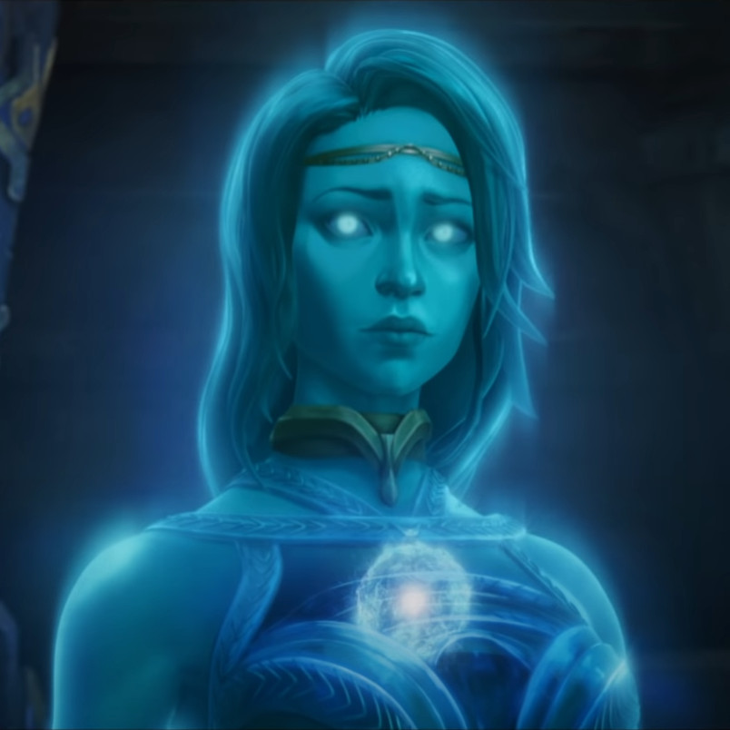
Y los que estuvieron ahí
son los que ya no pueden morir.
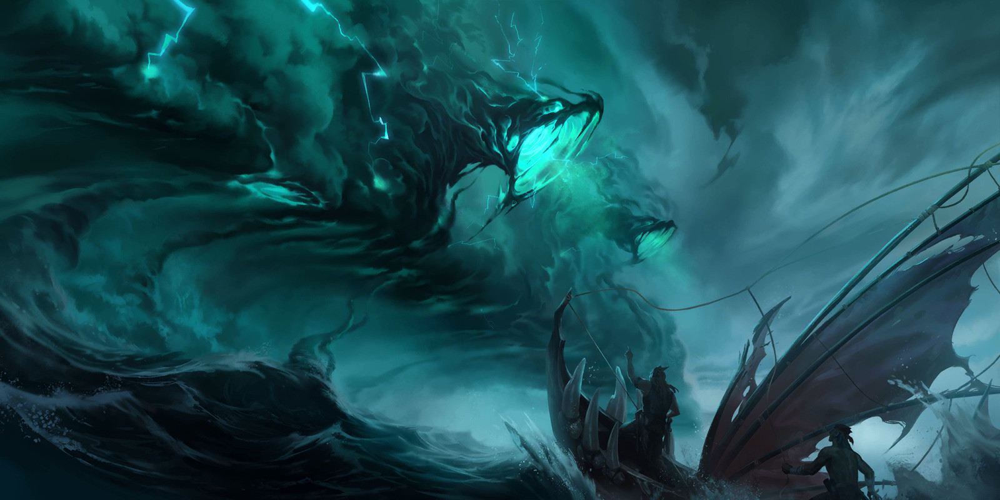
Todo lo vivo murió al instante. Ningún espíritu pudo irse.
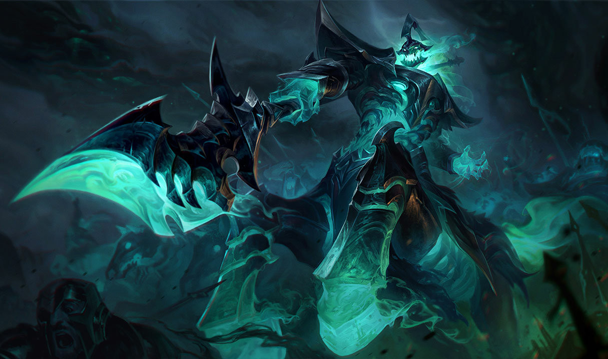
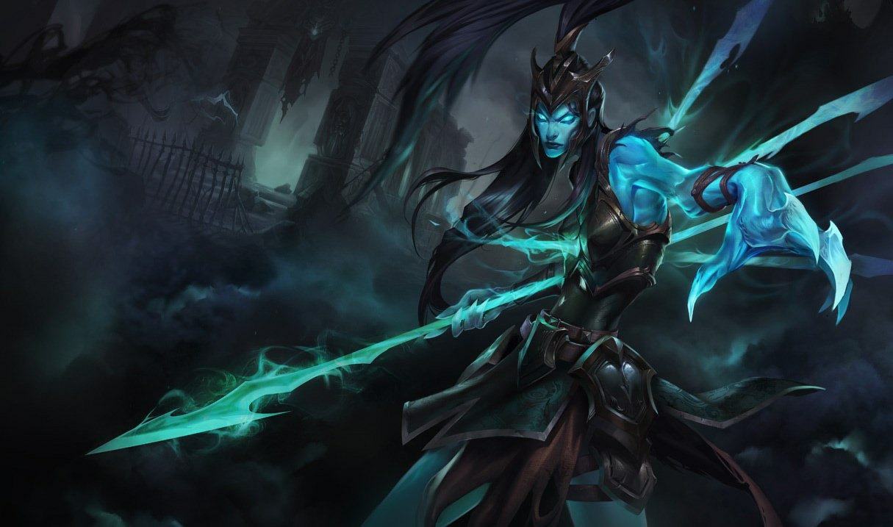
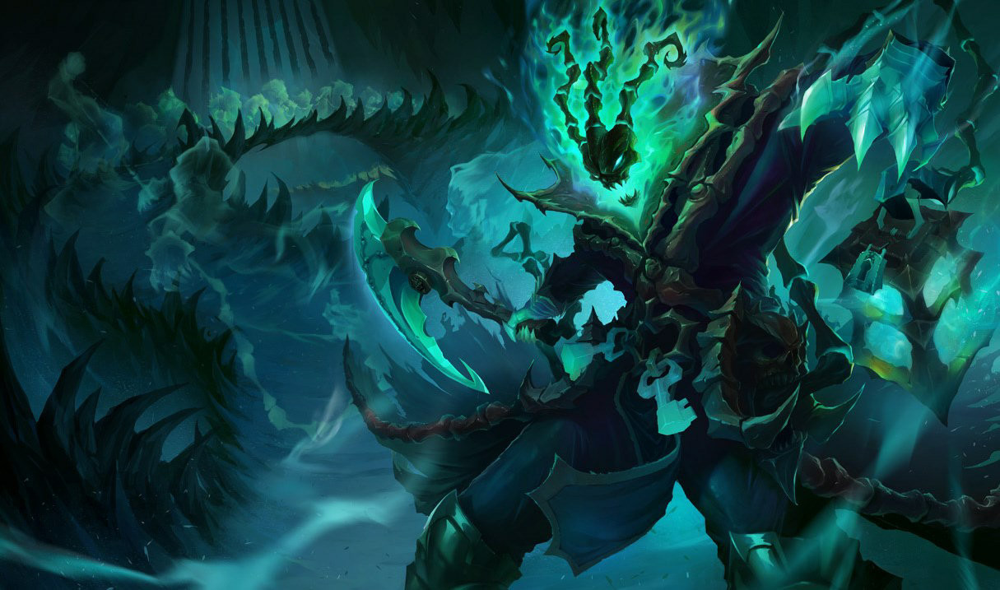
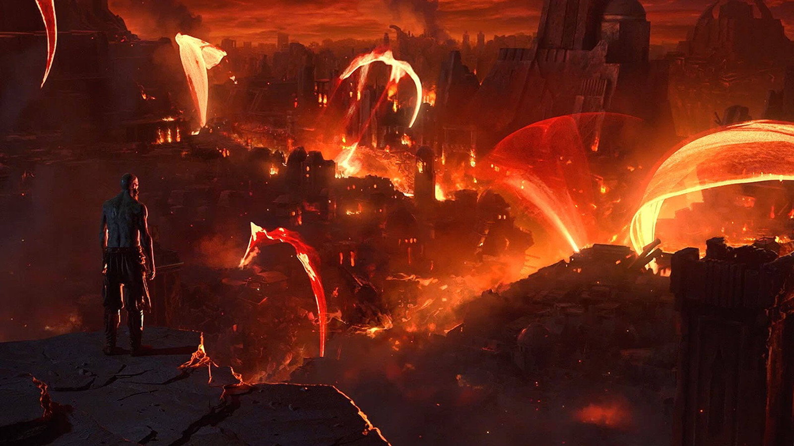
Veintidós años matándose con las armas que Helia existía para guardar.
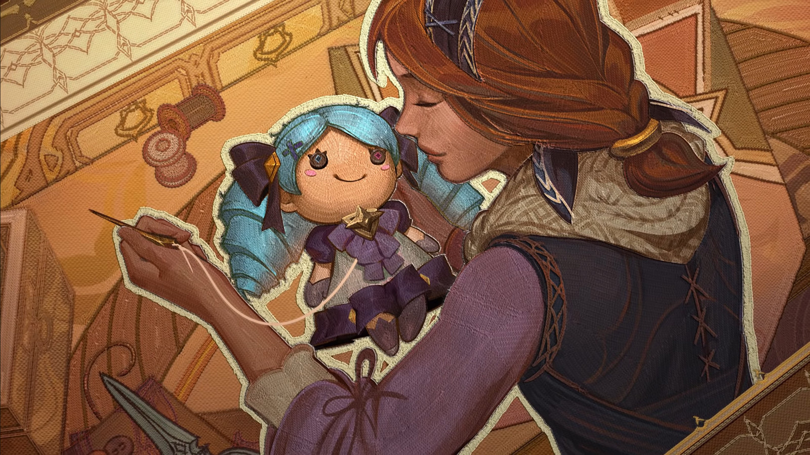
Jugaban a duelos de tijeras contra cubiertos debajo de la mesa.
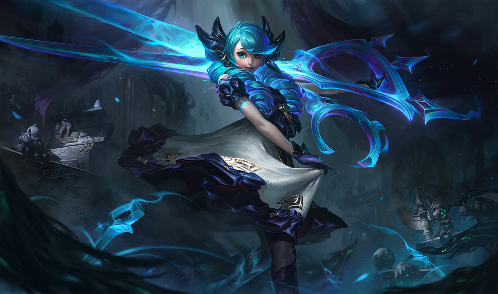
No se acordaba de su casa, ni de su nombre, ni de por qué estaba viva.
De toda su vida anterior
solo pudo recordar un nombre